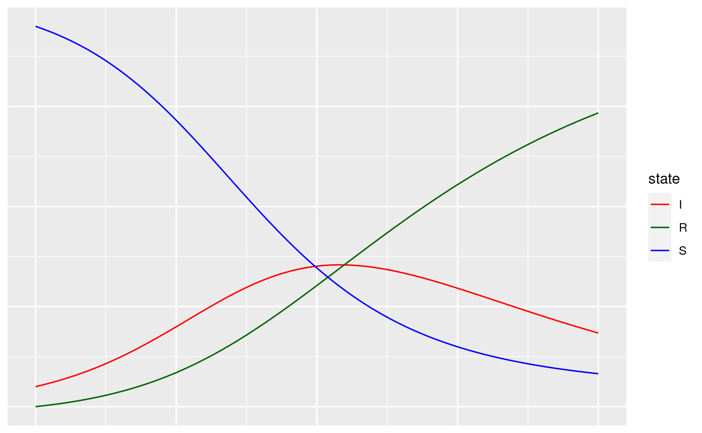
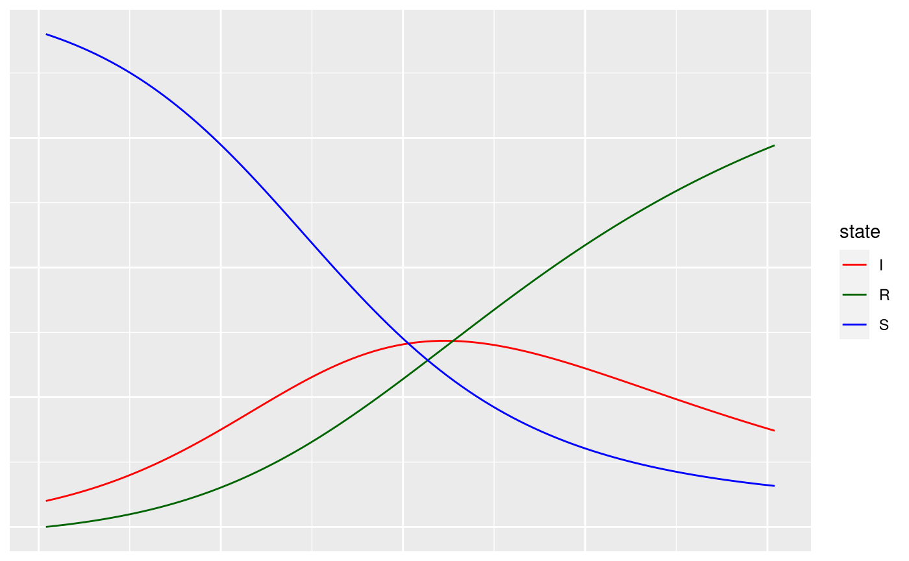
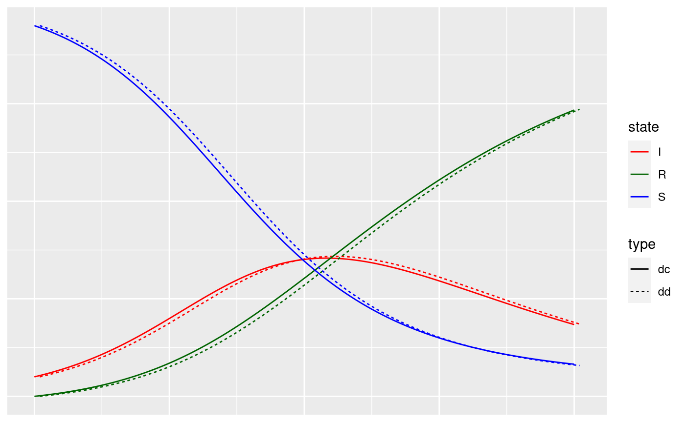
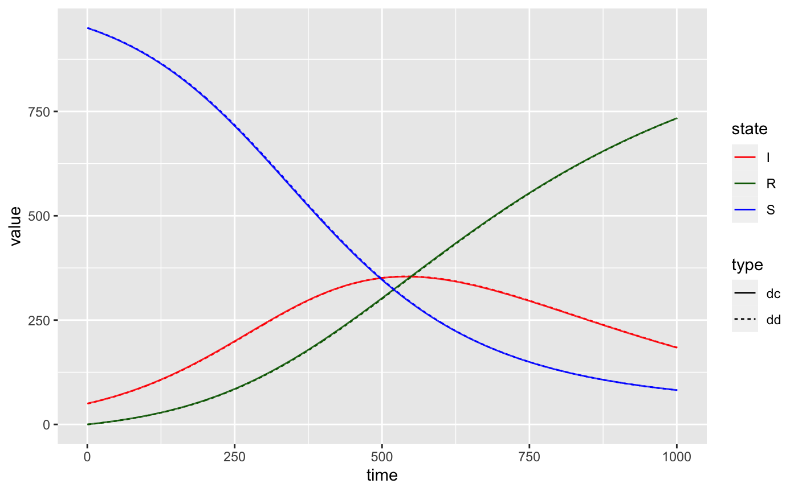
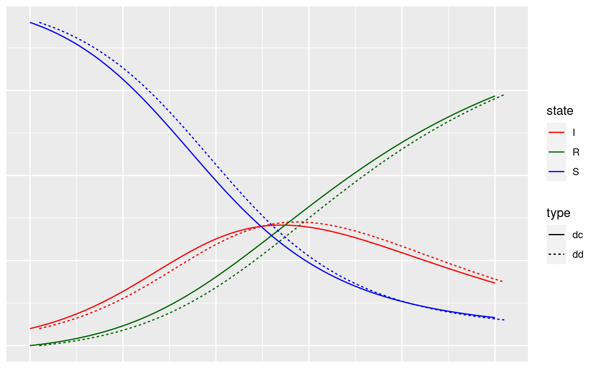

Hagelloch Measles – Modeling and Simulation
Source:vignettes/not-built-vignettes/hagelloch-mods.Rmd
hagelloch-mods.RmdOverview
In this series of vignettes, we will demonstrate epidemic analysis pipeline from EDA to dissemination using a case study of measles.

Hagelloch series vignettes
Hagelloch 1 Pre-processing and EDA
Hagelloch 2.1 Modeling and Simulation: the SIR model
Hagelloch 2.2 Modeling and Simulation: fitting a SIR model
Hagelloch 2.3.1 Modeling and Simulation: a stochastic SIR model
Hagelloch 2.3.2 Modeling and Simulation: a stochastic SIR model
Goals in this vignette
Introduce the SIR model.
Simulate some basic SIR models using
EpiCompare.Try to find SIR models to fit the Hagelloch data.
Split the SIR model into strata.
Intro the SIR model
The SIR model is a classic epidemiological model to describe how individuals move from Susceptible to Infectious to Recovered states over a period of time.
There are many ways to implement an SIR model, including describing transitions from one state to another in continuous or discrete time or deterministic or stochastic models. We will look at a couple instantiations here.
Kermack and McKendrick (1927) SIR model – a deterministic, continuous time model
The first SIR model was proposed by Kermack and McKendrick (1927) and is based on a series of ordinary differential equations (ODE). The idea is that individuals `flow’ from one discrete state (or compartment) to the next. These compartment-to-compartment transitions are defined by ODEs:
\[ S^\prime(t) = - \beta S(t)I(t)\\ I^\prime(t) = \beta S(t)I(t) - \gamma I(t)\\ R^\prime(t) = \gamma I(t) \] along with the constraint that \(S^\prime(t) + I^\prime(t) + R^\prime(t) \equiv 0\) and the initial conditions \((S(0), I(0), R(0)) = (s(0), i(0), r(0))\) are known.
In this set of ODEs, the instantaneous rate of change in the number of susceptibles is equal to parameter \(\beta\) times the number of susceptibles and the number of infectious. Another way to think of this is that the susceptibles and infectious interact homogeneously with one another and become infected at rate \(\beta\). The instantaneous rate of change of the number of recovered is equal to parameter \(\gamma\) times the number of infectious, or that the infectious are recovering at rate \(\gamma\). Then finally, \(I^\prime(t) = -S^\prime(t) - R^\prime(t)\), since the sum of the derivatives is zero.
In R, this requires special software to solve these ODEs, which have no known closed form solution. We adapt the following code from an example shown in the epirecipes project (Frost, n.d.) and convert it to a tidy format.
library(deSolve) sirmod = function(t, y, parms) { # Pull state variables from y vector S = y[1] I = y[2] R = y[3] # Pull parameter values from parms vector beta = parms["beta"] gamma = parms["gamma"] N = S + I + R # Define equations dS = - beta * S * I/N dI = beta * S * I/N - gamma * I dR = gamma * I res = c(dS, dI, dR) # Return list of gradients list(res) } times <- seq(0, 100, by = .01) parms <- c("beta" = .1, "gamma" = .03) inits <- c(S = 950, I = 50, R = 0 ) sir <- ode(y = inits, times = times, func = sirmod, parms = parms) tidy_df <- sir %>% as.data.frame() %>% tidyr::pivot_longer(cols = -time, names_to = "state")
We can then plot the number in each state.
library(ggplot2) ggplot(data = tidy_df, aes(x = time, y = value, group = state, col = state)) + geom_line() + scale_color_manual(values = c('S' = "blue", 'I' = "red", 'R' ="darkgreen"))

A deterministic, discrete time SIR model
This version takes the continuous time version of (Kermack and McKendrick 1927) and discretizes the time steps. We will assume the time step \(\Delta t=1\), and the difference equations for \(t= 1, \dots, T\) are
\[ \left [S(t) - S(t-1)\right ] = -\beta S(t-1)I(t-1)\\ \left [I(t) - I(t-1)\right ] = \beta S(t-1)I(t-1) - \gamma I(t-1)\\ \left [S(t) - S(t-1)\right ] = \gamma I(t-1), \] which are the first order approximations of the ODEs.
We can program this model with a simple for loop.
## discrete time and deterministic sir_dd <- function(parms = c('beta' = .1, 'gamma' = .03 ), inits = c(950, 50, 0), T = 100){ times <- 1:(T+1) mat <- matrix(0, ncol = 3, nrow = T + 1) colnames(mat) <- c("S", "I", "R") N <- sum(inits) mat[1,] <- inits for(tt in times[-1]){ mat[tt, 1] <- mat[tt-1, 1] - parms["beta"] * mat[tt-1, 1] * mat[tt-1, 2] / N mat[tt, 3] <- mat[tt-1, 3] + parms["gamma"] * mat[tt-1, 2] mat[tt, 2] <- N - mat[tt, 1] - mat[tt, 3] } df <- data.frame(time = times, mat) return(df) } out_dd <- sir_dd(parms = c('beta' = .1, 'gamma' = .03 ), inits = c(950, 50, 0), T = 100) tidy_dd <- out_dd %>% tidyr::pivot_longer(cols = -time, names_to = "state") library(ggplot2) ggplot(data = tidy_dd, aes(x = time, y = value, group = state, col = state)) + geom_line() + scale_color_manual(values = c('S' = "blue", 'I' = "red", 'R' ="darkgreen"))

We overlay the deterministic continuous time and the deterministic discrete time so see how good the discrete time is of the continuous.
tidy_df$type <- "dc" tidy_dd$type <- "dd" new_df <- bind_rows(tidy_df, tidy_dd) %>% mutate(group = paste(state,type, sep = "-")) library(ggplot2) ggplot(data = new_df, aes(x = time, y = value, group = group, col = state, linetype = type)) + geom_line() + scale_color_manual(values = c('S' = "blue", 'I' = "red", 'R' ="darkgreen"))

As we can see, these are good approximations of one another but not exact. In fact, when we fix \(\Delta t = 1\), the two sets of curves can be made arbitrarily close to one another, provided we scale \(\beta\) and \(\gamma\) correctly.
Here are some simulations when \(\beta = .01\) and \(\gamma = .003\) (with \(T=1000\)).

And when \(\beta = .2\) and \(\gamma = .06\) (with \(T=50\)). 
Next step
In the next vignette, we will take the continuous time, deterministic SIR model and fit it to the Hagelloch SIR data.
References
Frost, Simon. n.d. “Epirecipes: Epicookbook.” http://epirecip.es/epicookbook/chapters/ob18/c2/r.
Kermack, W. O., and A. G. McKendrick. 1927. “A Contribution to the Mathematical Theory of Epidemics.” Proceedings of the Royal Society of London A: Mathematical, Physical and Engineering Sciences 115 (772): 700–721. https://doi.org/10.1098/rspa.1927.0118.